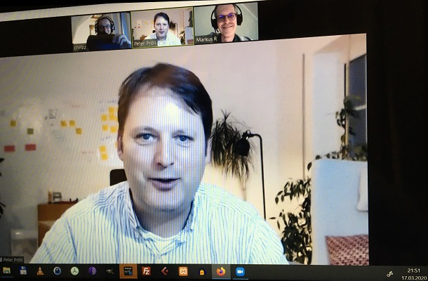

Der Aachener Podcast für Zusammenarbeit In agilen Organisationen
Unser zweiter Gast Peter Pröll, Coach und Moderator für Organisationsentwicklung & Agile Transformationen, stellt uns den Prinzipiensatz des BetaCodex vor.
Was ist es? Was ist es nicht? Was sind die Benefits? Und welche Gemeinsamkeiten und Unterschiede lassen sich zu den agilen Methoden (Scrum, Lean & Co) aus der letzten Folge erkennen?
Im Gespräch erötern wir zudem, warum man sich als Beta-Männchen* konsequenter Weise mit nassem Wasser wäscht, wie man gleichzeitig Management abschaffen und Manager wertschätzen kann und warum Schwarz plus Weiß nicht Grau ist. Hat Dich dieser Text verwirrt? Das liegt sicherlich am 100%igen Tonic Water in der Folge 4 und lässt sich nur dadurch entwirren, dass du nun deine Kopfhörer einstöpselt, aufhörst mit Lesen und endlich anfängst zu Hören.

Errrm… also…das soll jetzt nicht als Aufforderung verstanden werden und ganz bestimmt wollen wir Euch von nirgendwo abholen (ist aktuell eh nicht drin). Dafür laden wir Euch jetzt herzlich ein, uns für eine knappe Stunde zuzuhören.
Wie immer Euer Füßezurück per Elektropost an post@dailyofthemonth.de
Stay Healthy
Markus, Chris & Joshua
BetaCodex Website https://betacodex.org
BetaCodex Community auf XING https://www.xing.com/communities/groups/beyond-budgeting-cc88-1008858/posts
BetaCodex Community auf LinkedIn https://www.linkedin.com/company/betacodex-network/
Slack-Kanal für BetaCodex-Interessierte https://BetaCodex.org/slack
Angesprochene Blogposts
Transformationsprinzipien des BetaCodex https://alinbu.net/blog/10-erfolgskriterien-fuer-die-transformation
Mythos agiles Mindset https://alinbu.net/blog/mythos-agiles-mindset
Kontakt zu unserem Gast Peter Pröll
Buchtipps von Peter zum BetaCodex
Weitere Infos & Feedback an uns
Idealerweise über unsere Webseite
Neuste Musikbeiträge von unseren Gästen und uns (Update 03/2020):
Die Musik Playlist zum Daily of the Month findet ihr auf Spotify unter:
(https://open.spotify.com/dailyofthemonth-musical-intention
-~-~-~-~-~ “Liebe Leute, bleibt gesund." -~-~-~-~-~